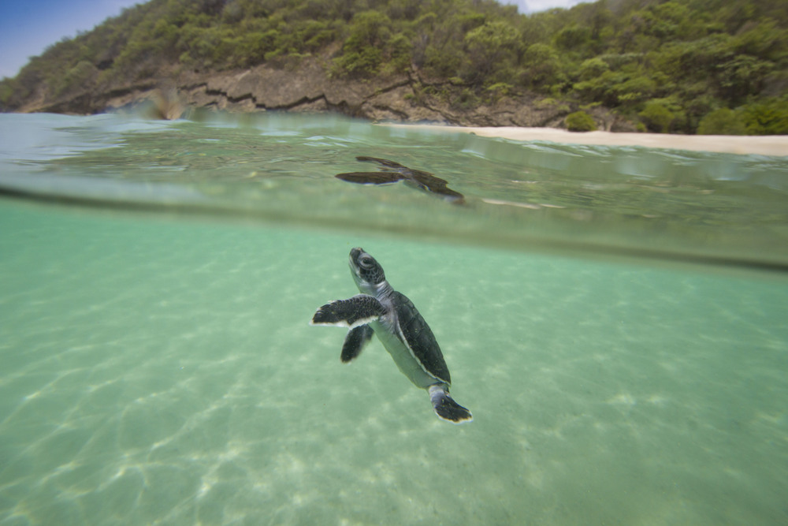

Protected sanctuary on the Riviera Maya coast
Between Playa del Carmen and Tulum, the beaches of Xcacel and Xcacelito remain among the most important undeveloped nesting grounds on the Riviera Maya. This stretch of coast has been recognized for decades as a sanctuary for green and loggerhead sea turtles, and the Marine Turtle Foundation works in direct partnership with local rangers, biologists, and community volunteers to keep it that way. While much of the surrounding coastline has been built up for tourism, Xcacel has held onto its wild character, and our work here is about making sure it stays protected for the turtles that depend on it.
Nightly patrols, nest marking, and hatchery support
Green and loggerhead sea turtles
90+ rangers, volunteers, and local stewards

Xcacel sits in a part of Quintana Roo where development pressure has never been higher. To the north, Playa del Carmen continues to expand. To the south, Tulum has become one of the most visited destinations in Mexico. Sandwiched between them, Xcacel and the smaller neighboring beach of Xcacelito offer something increasingly rare on the Caribbean coast: dark, quiet sand where turtles can nest without bright lights, heavy foot traffic, or construction noise.
For female green and loggerhead turtles, finding a suitable nesting beach is not simply a matter of geography. They return to the general area where they hatched, sometimes decades earlier, and they rely on natural cues like sand temperature, beach slope, and the absence of artificial light. Xcacel provides those conditions better than almost anywhere else in the central Riviera Maya, which is why it has long been designated as a protected sanctuary rather than open beachfront for development.
Nesting season at Xcacel typically runs from May through October, with peak activity for green turtles in the summer months and loggerheads appearing somewhat earlier in the season. Our teams begin patrols at dusk and continue through the night, walking the full length of the sanctuary beach and the adjacent Xcacelito shoreline. When a nesting female is encountered, trained staff and volunteers record her species, tag her if she has not been tagged before, measure her carapace, and mark the location of her nest with GPS coordinates.
Not every nest can remain where it was laid. Some are too close to the high tide line and would be washed away. Others sit in areas where erosion has made the sand unstable. In those cases, eggs are carefully relocated to the sanctuary hatchery, where rangers monitor temperature and humidity daily. Hatchery management is painstaking work. A few degrees of difference in sand temperature can shift the ratio of male to female hatchlings, so our teams log conditions continuously and adjust shading when needed.
When hatchlings emerge, usually about two months after nesting, they are released at the water's edge under controlled conditions. Public release events are limited and always supervised, because uncontrolled crowds, camera flashes, and bright phone screens can disorient newborn turtles at the most vulnerable moment of their lives. The goal is simple: give as many hatchlings as possible a clean path to the sea.
Xcacelito, the smaller cove just south of the main Xcacel beach, serves as both a secondary nesting site and a sheltered pocket of coastal habitat. The vegetation behind both beaches includes dune plants and low coastal forest that stabilize the sand and filter runoff before it reaches the reef. Behind the tree line, a cenote-fed lagoon system connects the sanctuary to inland waterways. Juvenile turtles use these calmer inshore areas as they grow, and the health of the lagoon directly affects the quality of habitat available to them.
Our conservatory program at Xcacel funds regular water quality testing in the lagoon, removal of invasive plant species along the dune line, and replanting of native coastal vegetation after storm events. Hurricanes and tropical storms are a fact of life on the Caribbean coast, and they reshape beaches quickly. After major weather events, our teams assess nest loss, rebuild hatchery structures, and document how the shoreline has shifted so that future nesting seasons can be planned accordingly.
Xcacel is not a typical tourist beach, and that is intentional. Access is managed to limit disturbance during nesting season, and visitors who come to learn about the sanctuary are guided through structured educational visits rather than open recreation. The Marine Turtle Foundation supports local guides and educators who explain the nesting process, the history of the sanctuary, and the simple rules that visitors must follow: no flash photography, no touching turtles, no litter, and no white-light flashlights on the beach at night.
We also work with hotels and tour operators in nearby Tulum and Playa del Carmen to redirect well-meaning but harmful behavior. Many tourists arrive hoping to see turtles without realizing that unguided visits can do more damage than good. By channeling interest through official sanctuary programs, we give people a meaningful experience while keeping the beach safe for the animals themselves.
Volunteers are needed each season for night patrols, hatchery maintenance, beach cleanup, and visitor education. Donations help fund ranger salaries, tagging equipment, hatchery supplies, and emergency response after storms. Even if you cannot travel to Quintana Roo, sharing accurate information about Xcacel helps counter the spread of misinformation about where and how turtle viewing is appropriate.
The sanctuary at Xcacel and Xcacelito represents what the Riviera Maya looked like before mass tourism arrived: a quiet coast where turtles still come ashore in significant numbers every year. Protecting that legacy takes daily effort, and we are committed to being here for every nesting season to come. Learn more about the broader region on our Riviera Maya page and about our work in Tulum to the south.